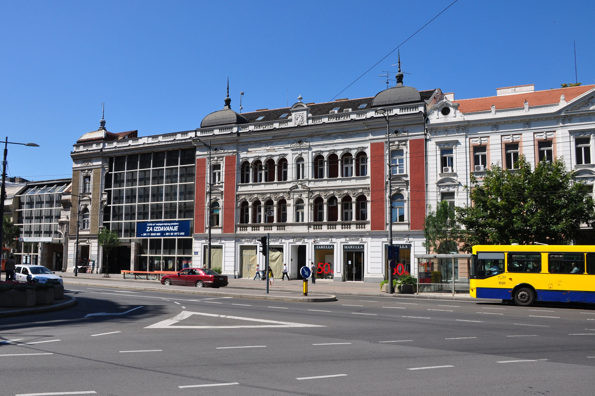
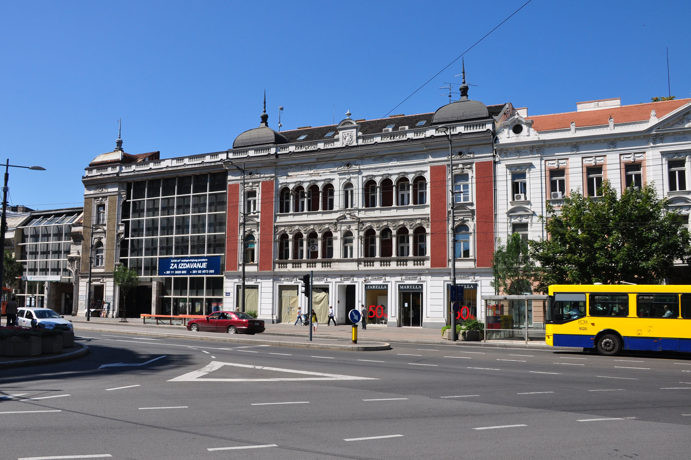

Was wir gegessen haben..In Serbien kostet vieles und vorallem das Essen nicht so viel wie bei uns. Wenn man die richtigen Orte kennt isst man gut und günstig.
Dinar
Die Währung von Serbien..
Bezahlt wird in Serbien mit dem serbischen Dinar. Dieser kann zum Wechselkurs von 1 zu 0.0094 gewechselt werden. So sind umgerechnet 100 Franken etwas mehr als 10'000 Dinar
und dementsprechend Gross waren unsere Geldbündel.
Gebüde
Die Optik von Belgrad..
Die Gebüde im Balkan könnten mit den unseren in einem kaum grösseren Kontrast stehen. Sie sehen alt aus oder sind gar heruntergekommen.
Von vielen hängen riesige Werbeplakate herunter oder sind mit dem Logo der darin sitzhaften Firma ausgestattet.
Strassen
Worauf man sich fortbewegt..
Bei uns haben auch die Strassen einen Eindruck hinterlassen. Die Strassen und Gehwege sind mit grossen Schlaglöchern übersäht.
Es ist eng und viele Autos sind an den Rändern von Verzweigungen oder auf dem Gehweg parkiert. An einigen Plätzen wurde auch renoviert, was
zu einem starken Kontrast zu den restlichen Strassen führt.
Nachtleben
Belgrad bei Nacht..
Eindrücklich waren auch die Nächte in der Hauptstadt Serbiens. Es sind im Vergleich zum Tag kaum noch Fahrzeuge oder Menschen auf den Strassen.
Im Licht der Strassenlaternen sieht alles komplett anderst aus.
Kirchen
Die orthodoxen Kirchen..
Im Balkan ist der christlich orthodoxe Glaube weit verbreitet. Ihre Kirchen können durch ihre charakteristisch runde Bauweise
von die der unseren Unterschieden werden und sind eine wahrlich eindrückliche Sehenswürdigkeit.
Panzer
Boom Boom..
In der ehemaligen Festung von Belgrad waren einige demilitarisierte Fahrzeuge aus dem 2. Weltkrieg und dem kalten krieg zu sehen.
Vieles davon war altes deutsches oder serbisches, sprich sovjetisches Gerät.
Sehenswürdigkeiten
Für Touristen ein must-see..
Parks, Kirchen, Hotels, Museen, Denkmale und vieles weiteres kann als Tourist angesehen werden. Aus zeitlichen Gründen und weil wir mit anderen Dingen beschäftigt waren,
konnten wir jedoch nicht viele Sehen. Die Bilder sind unterliegen der Creative Commons Lizenz von www.all-free-photos.com.


 
